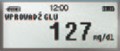

Kalkulator Bolusa umożliwia następujące czynności:
- Podanie bolusów korekcyjnych:
wprowadź tylko stężenie glukozy
we krwi (zaakceptuj 0 wymienników węglowodanowych)
- Podanie bolusów
posiłkowych: wprowadź tylko
ilość wymienników węglowodanowych
- Kombinacja (bolus posiłkowy
+ korekcyjny): wprowadź zarówno
stężenie glukozy we krwi, jak i ilość
wymienników węglowodanowych
Przykład:
Wartość glukozy we krwi 127 mg/dl
i ilość wymienników węglowodanowych = 4 WW
Krok 1
Naciśnij raz przycisk B lub 3
krotnie ACT jeśli chcesz skorzystac z
opcji Kalkulator Bolusa.
Krok 2
Za pomocą strzałek wprowadź stężenie
GLUKOZY WE KRWI w mg/dl lub
mmol/l (w zależności od ustawień) i
naciśnij ACT.

Krok 3
Za pomocą strzałek wprowadź posiłek
w WW i naciśnij ACT.
Krok 4
Za pomocą strzałek można przeglądać
menu PRZEWIDYWANIA.
Krok 5
Jeśli zdecydujesz się na podanie
bolusa, naciśnij ACT, dostosuj
dawkę insuliny, następnie w celu
potwierdzenia i podania dawki
naciśnij ACT.